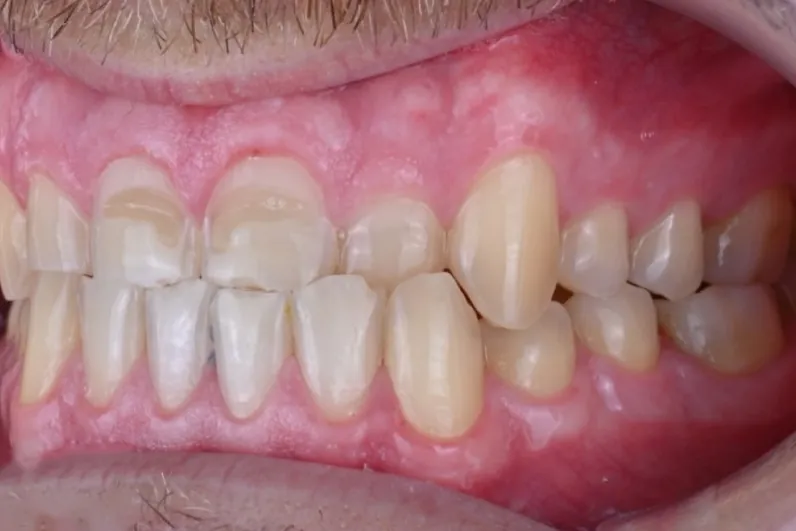
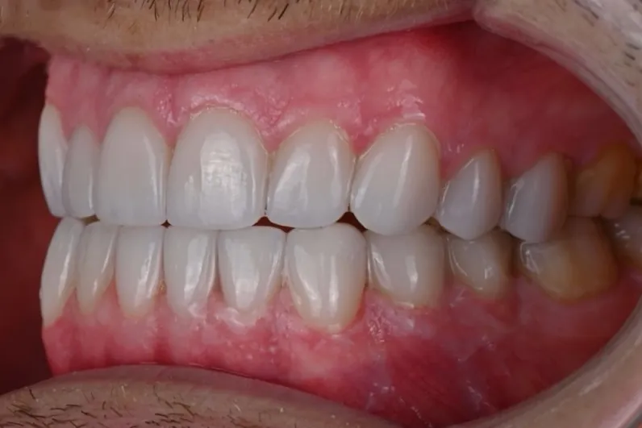

Krunice od bezmetalne keramike
Cirkonijum i druge bezmetalne keramike nemaju metalnu osnovu, pa nema tamnog ruba uz desni. Dobar su izbor kada su važni i estetika i čvrstina.
Protetika
Bezmetalna keramika za krunice i mostove. Funkcija zagrižaja i prirodan izgled — uže polje dr Žarka Mijuškovića.

Uvod
Cirkonijum krunice i mostovi od bezmetalne keramike rade se u Nikšiću, u ordinaciji specijaliste stomatološke protetike. Protetika vraća zube koji su oštećeni, istrošeni ili nedostaju. Dobar protetski rad se ne primećuje — primećuje se da možete normalno da žvaćete i da se smejete.
Rešenja
Cirkonijum i druge bezmetalne keramike nemaju metalnu osnovu, pa nema tamnog ruba uz desni. Dobar su izbor kada su važni i estetika i čvrstina.
Most nadoknađuje jedan ili više izgubljenih zuba, oslanjajući se na susedne zube. Kada su susedni zubi zdravi, razgovaramo i o implantu kao opciji.
Tradicionalno rešenje koje se i danas koristi u određenim situacijama.
Totalne, parcijalne i skeletirane proteze, uključujući kombinovane radove sa atečmenima za bolju stabilnost.
Krunice i mostovi na implantima. Više na stranici Implanti →
Za koga je
Postupak
Procena zuba, korena, desni i zagrižaja.
Objasnimo opcije i zašto preporučujemo određeno rešenje.
Po potrebi privremena krunica.
Proveravamo naleganje, boju i zagrižaj.
Uputstva za održavanje i termin kontrole.

Zašto specijalista
Dr Žarko Mijušković je specijalista stomatološke protetike. Krunice i mostovi su njegovo uže polje, ne usputna usluga. Svaki rad planira se tako da odgovara celom zagrižaju, a ne samo jednom zubu.
Rezultati




Želite ovakav rezultat? Pozovite
Svaki plan terapije pravi se individualno, nakon kliničkog pregleda i snimka. Izgled i trajanje rada zavise od stanja zuba i desni, navika i održavanja, pa se ishod ne može unapred garantovati.
Pitanja
Cirkonijum nema metalnu osnovu, pa je prirodniji uz desni i ne daje taman rub. Metalokeramika ima metalnu osnovu obloženu keramikom. Šta je bolje za Vas, zavisi od položaja zuba i zagrižaja.
Da, za krunicu je potrebna priprema zuba. Koliko, zavisi od materijala i stanja zuba.
Zavisi od održavanja, zagrižaja, navika i redovnih kontrola. Ne dajemo unapred rok trajanja.
Obe opcije su moguće. Implant ne traži brušenje susednih zuba, most se oslanja na njih. Prednosti i ograničenja objasnimo na pregledu.
U većini slučajeva da. Prvo proverimo stanje zuba nosača ispod mosta.
Obično nekoliko, zavisno od broja zuba i plana. Pacijentima van Nikšića termine usklađujemo da bude što manje putovanja.